TL;DR Pixels likely to move together can share matching evidence and motion; FATE learns this grouping from flow supervision, achieving SOTA zero-shot accuracy on Sintel Final and KITTI, with the largest gains where direct matches are unavailable.
Abstract
Optical flow requires reliable matching from sufficient visual context while estimating precise motion at every pixel. State-of-the-art methods such as WAFT match on fixed grids and then upsample flow, without explicitly linking how visual evidence is gathered for matching to how motion is distributed to each pixel. Our key insight is that pixels likely to move together can share visual evidence for matching and draw on the same motion estimates; this consistent visual grounding lets correspondence operate at a coarser scale than the flow. We realize this in Flow from Adaptive Token Estimation (FATE), which learns adaptive correspondence tokens whose supports spread within coherent regions to gather context and sharpen at motion boundaries to keep flow precise. Shared soft pixel-to-token associations pool features for matching and combine coarse token motions into precise pixel flow. Flow supervision jointly trains grouping, matching, and flow estimation without segmentation labels, enabling the model to anticipate which pixels are likely to move together from appearance alone in unseen images. Trained on FlyingChairs and FlyingThings3D, FATE achieves state-of-the-art zero-shot accuracy on Sintel Final and KITTI, a critical setting given scarce real-world flow labels. For visible pixels, FATE improves accuracy within coherent regions, and more so near motion boundaries. Its largest gains occur where direct matches are unavailable: occluded or out-of-frame pixels account for roughly 10% of valid pixels but 50% of WAFT's total error. Experiments show that learning adaptive correspondence through pixel-to-token grouping enables both reliable matching and precise pixel-level flow, and improves generalization to unseen real scenes.
Spread inside a region, sharpen at a boundary
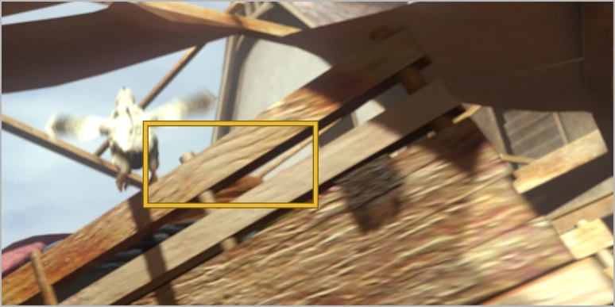
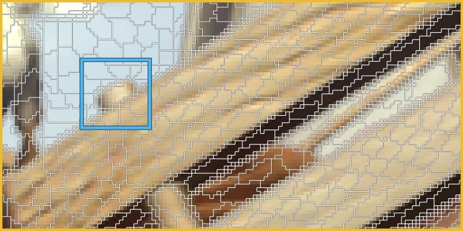
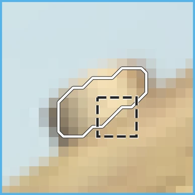
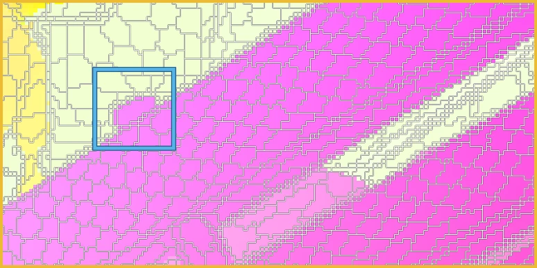
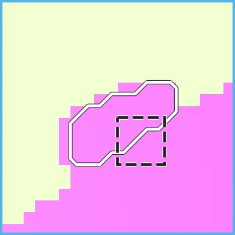
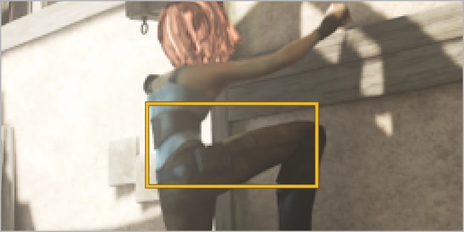
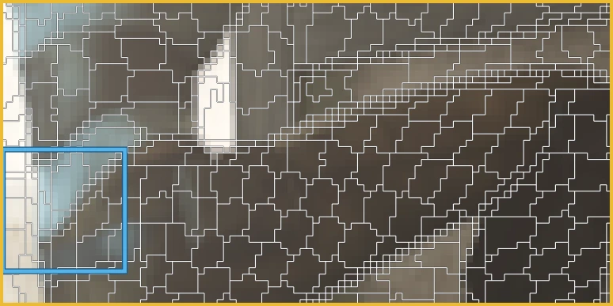
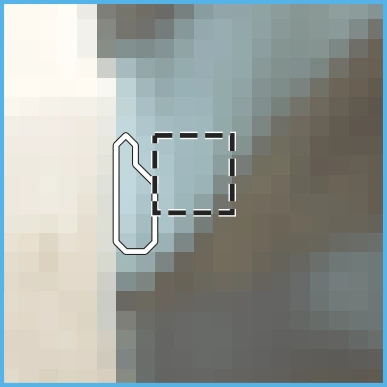
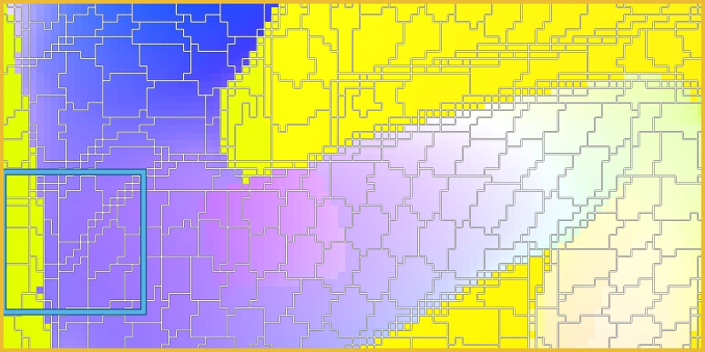
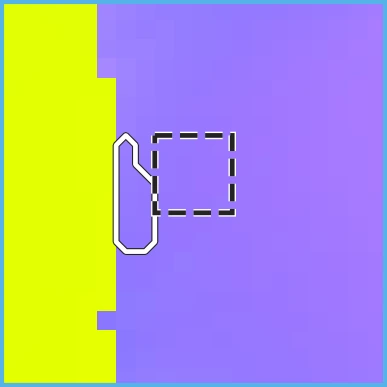
The gains show up where a pixel cannot be matched alone
A thin protrusion moves unlike the surfaces on both sides. FATE keeps its motion distinct.
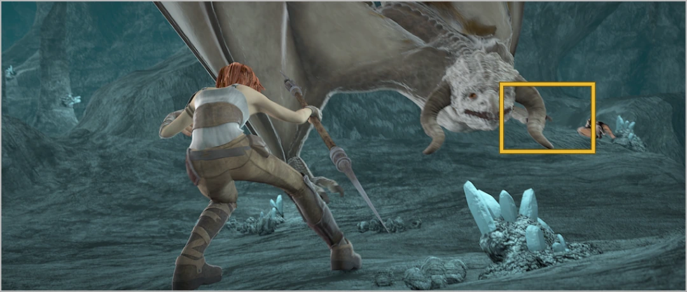
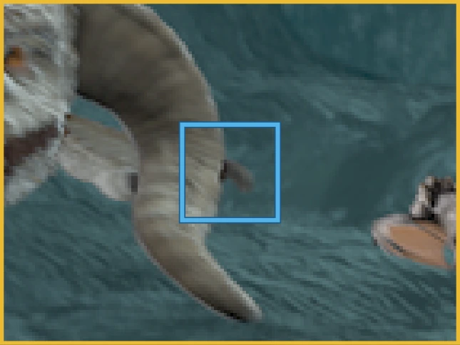
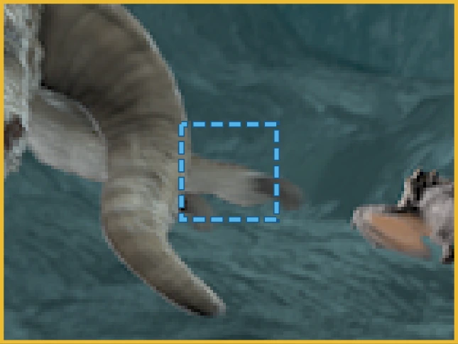
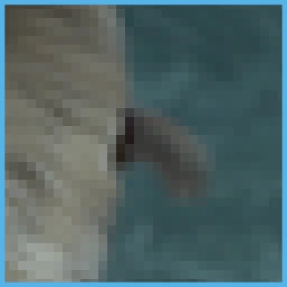
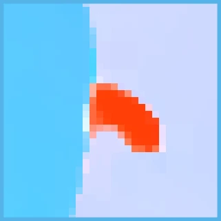
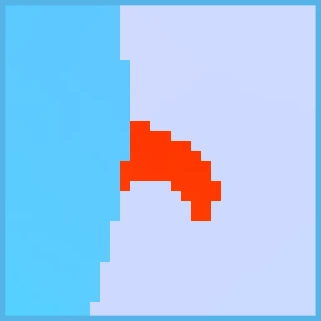
Leaves hidden by a wing in Image 2 have no match. Their tokens infer motion from the surrounding context.
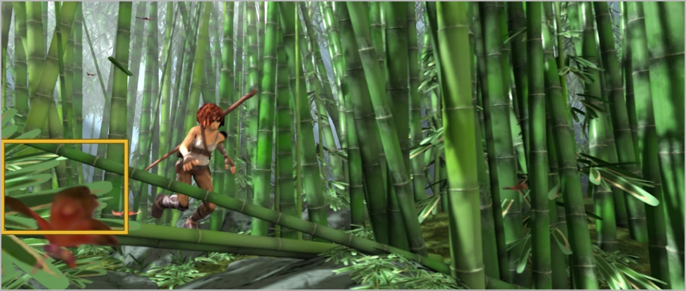
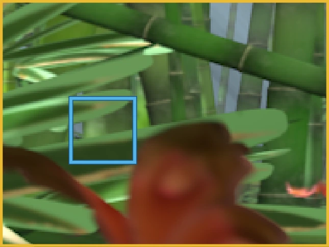
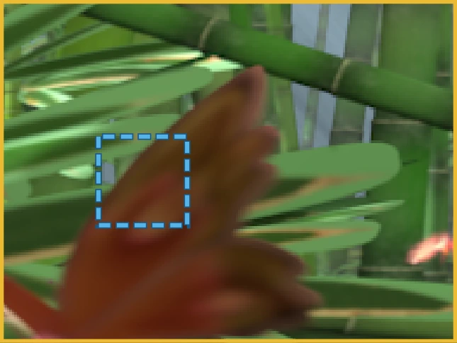
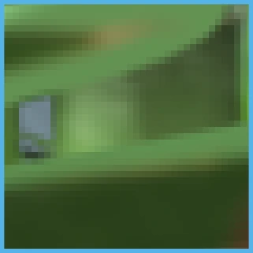
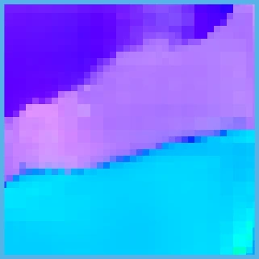
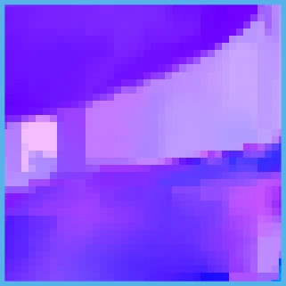
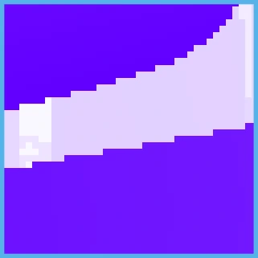
Sunlight and shadows on the car change between frames. WAFT follows them; FATE keeps the car's motion coherent.
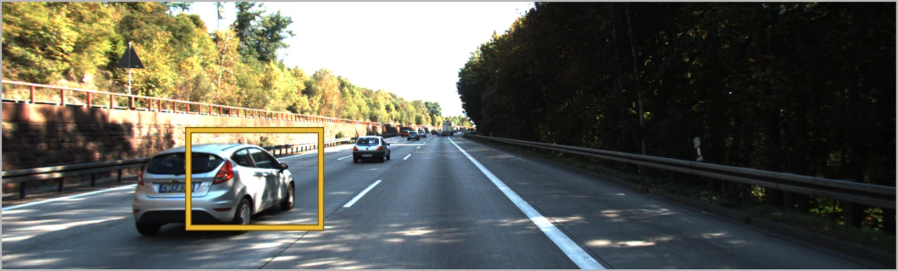
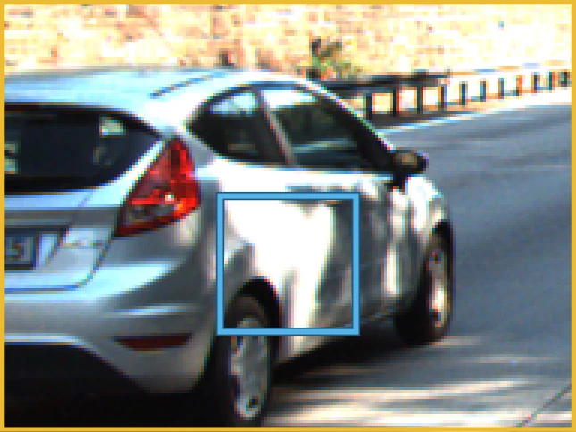
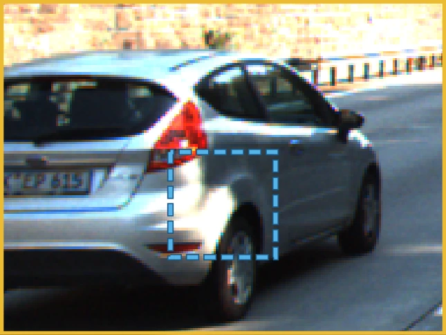
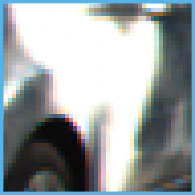
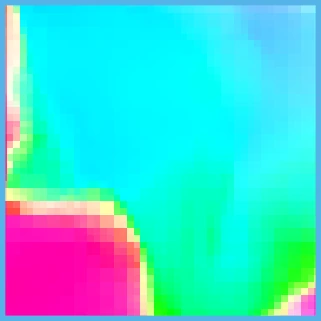
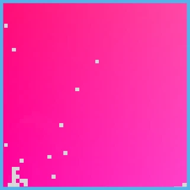
Coarse matches, then precise pixel flow
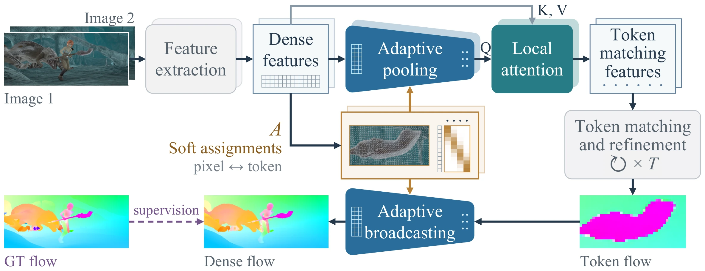
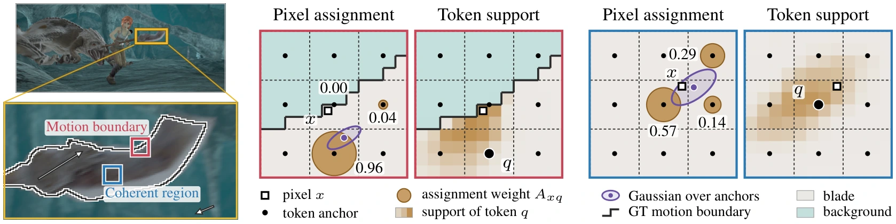
Try it: how one pixel spreads its weight over nearby tokens
A pixel spreads its weight over the nine nearby token anchors with one Gaussian.
Drag the orange point \(\mu_x\) to move the Gaussian.
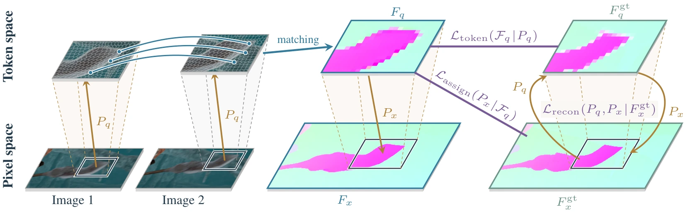
Lowest zero-shot error on Sintel Final and KITTI
Show the numbers
Show the numbers
Drag to compare WAFT and FATE.
How to read these images
Hue gives the direction of motion and color intensity its speed; white means no motion. Ground truth and both predictions share one color scale per example. In the visibility map, blue marks pixels whose target is occluded or out of frame, gray the other valid pixels, and black excluded pixels. Black in the ground truth marks missing labels; KITTI's sparse labels are enlarged for display. On the token map, white lines separate pixels assigned to different tokens.
Adaptive tokens beat fixed grids at the same token count
Same token count. Learned support still wins.
Show the numbers
Where the match is missing, attention helps FATE more than a fixed grid.
Given the true motion, learned support keeps more of it than fixed cells.
Four steps beat five-step WAFT, at lower cost.
Show the numbers
Same grouping for the match and the pixel flow. Largest gains where a direct match is missing.
Citation
@inproceedings{hsieh2026fate,
title = {Dense Flow from Adaptive Correspondence},
author = {Hsieh, Cheng-Lin and Yu, Stella X.},
booktitle = {Advances in Neural Information Processing Systems (NeurIPS)},
year = {2026}
}Acknowledgements
This project was supported in part by NSF grant 2313151, with additional computing resources provided through NAIRR Pilot CIS240421 and CIS240431. The authors thank SpixelFCN and WAFT for sharing their code.